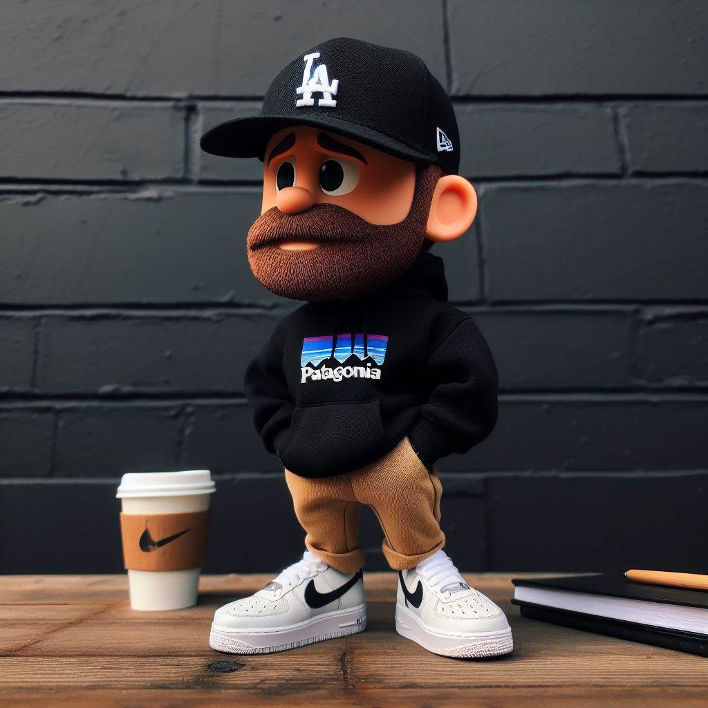

I architect and scale device management solutions at Patagonia, where I've spent 7+ years building the infrastructure that keeps a global workforce running.
My focus is on building systems that just work — tech-driven deployments, cross-platform compliance automation, and the live production infrastructure that powers company-wide town halls.
I work across Jamf Pro, Microsoft Intune, SCCM, and Apple Business Manager, managing 2,000+ endpoints.
Based in Ventura, CA — close enough to the mountains and the water that I spend most of my free time at one or the other.
I care a lot about craft — whether that's a well-structured MDM policy, a clean patch automation workflow, or any system worth doing right.
Designed a fully automated deployment workflow for macOS using Jamf Setup Manager and Apple Business Manager. Reduced provisioning from hours to under 20 minutes.
Implemented macOS Platform SSO with Secure Enclave and deployed Jamf Connect for least-privilege admin access. Eliminated legacy password-based auth.
Architected broadcast-grade live streaming for company-wide town halls. Integrated OBS, ProPresenter, and Teams for hybrid events reaching thousands.
Built macOS and iOS patch management strategy using Jamf Pro, automating compliance reporting and remediation workflows.
Deployed Apple Content Caching servers, reducing WAN bandwidth consumption and accelerating software delivery company-wide.
First post — testing the blog, looking at Earth. I set this site up as a simple place to put things — notes, projects, whatever I feel like writing about.